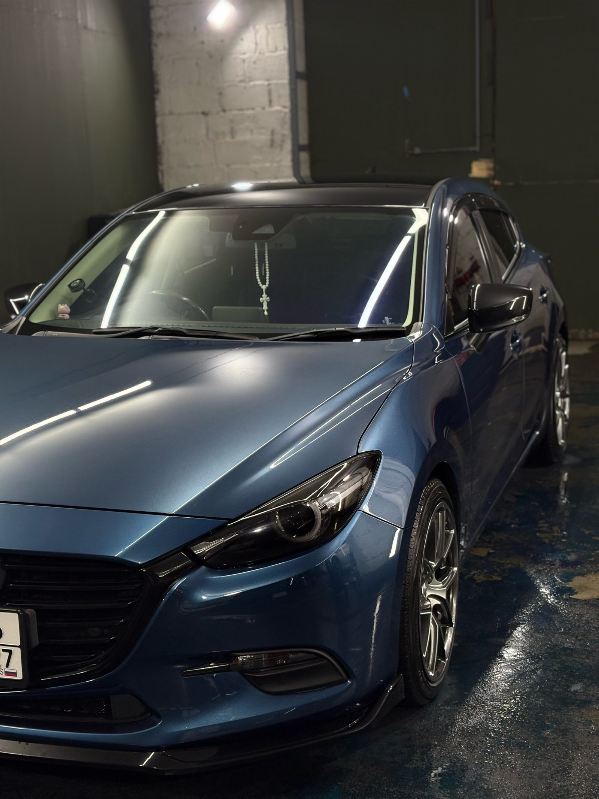

Возвращаем панелям ровную геометрию. Уезжаете на машине, у которой снова хочется разглядывать кузов.
Студия «Глубокий Блеск» работает в Железнодорожном районе Хабаровска, на проспекте 60-летия Октября, 107в. Специализация — детейлинг и кузовной ремонт, в первую очередь ремонт вмятин. Машину отдаёте с ровными панелями и уезжаете без мысли о помятом крыле.
Парковка у супермаркета, чужое зеркало задело крыло — и вот уже панель смотрится чужой. Мастер выправляет металл, поверхность снова ровная, а краска на месте остаётся той же, что была с завода.
← листайте →
Студия открыта каждый день с 10:00 до 20:00, заезд можно подобрать под свой график.
Позвонить или написать в WhatsApp — и время уже согласовано.
Железнодорожный район, проспект 60-летия Октября, 107в.
Пишете в WhatsApp или звоните и называете удобный день.
Приезжаете на проспект 60-летия Октября, 107в.
Машина встаёт на ремонт вмятин, панель в работе.
Забираете машину с ровным кузовом и спокойной головой.
Студия открыта ежедневно с 10:00 до 20:00.
Студия открыта каждый день, с 10:00 до 20:00.
Мы находимся по адресу: проспект 60-летия Октября, 107в, Хабаровск.
Позвоните или напишите в мессенджер, согласуем удобное время.
Цена зависит от марки и модели машины и объёма работ. Сумму студия называет по звонку или в мессенджере.
Способ оплаты уточните при записи, по телефону или в мессенджере.
Ремонт вмятины обычно выравнивает деталь без замены. Если лакокрасочное покрытие цело, окраска, как правило, не нужна. Покраска требуется, когда краска повреждена или деталь деформирована сильнее.
Если покрытие повреждено, одного выравнивания обычно недостаточно, и в этом месте может понадобиться окраска. Точный объём работ обычно уточняют при записи.
Небольшая вмятина не всегда мешает работе автомобиля. Но если краска в этом месте треснула, металл со временем может начать ржаветь, поэтому ремонт обычно делают, чтобы не дать повреждению развиться дальше.
Как правило, после работ деталь возвращается к ровной форме и выглядит в одну линию с соседними панелями. Если работа затрагивала покрытие, о сроках и особенностях последующего использования детали скажут при записи.